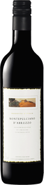

Винный магазин Геофизика
Montepulciano d'Abruzzo DOC
Описание вина
|

|
|
Год:
|
2015
|
|
Страна происхождения:
|
Италия, регион Абруццо
|
|
Тип вина:
|
Красное сухое
|
|
Цена за бутылку:
|
1200 рублей
|
Подробное описание товара
Монтепульчано – сорт красного винограда, культивируемый вдоль восточного побережья Италии, в регионах Абруццо, Марке, Молизе и в Апулии, а также в Умбрии и Лацио. Один из самых распространенных сортов винограда в Италии, виноградники занимают около 35 тысяч га.
Сорт монтепульчано не стоит путать с вином Нобиле ди Монтепульчано (Nobile di Montepulciano), которое производится из санджовезе.
Родиной монтепульчано считается Абруццо, точнее та часть региона, которая примыкает к горной вершине Майелла. В Абруццо посадки монтепульчано занимают 50% общей площади.
О монтепульчано упоминал Плиний Старший, многочисленные источники XVIII века указывают на то, что этот сорт был распространен в Абруццо уже в те времена. Но только ампелография 1875 году дифференцировала монтепульчано от санджовезе и от пруньоло джентили (санджовезе из Nobile di Montepulciano).
Монтепульчано любит холмы с глинистой почвой, жаркий и сухой климат.
Из монтепульчано производят как сортовые, так и ассамбляжные вина.
Вина из монтепульчано отличаются насыщенным, темно-рубиновым цветом.
Основные ароматы – щелковица, вишня, влажная земля, специи, особенно черный перец, тона какао и табака. Вина из монтепульчано получаются тельными, с хорошо интегрированной кислотностью и не слишком агрессивными танинами.